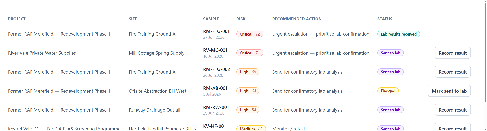

Fluorsight · PFAS field triage
Which samples are worth a lab test?
An investigator arrives with 40 samples and budget for eight. Today that call comes from experience. Fluorsight makes it from a measurement, before the lab bill exists. Goal: no PFAS investigation limited by not knowing which samples mattered.
Try it — no login
fluorsight.co.uk
SOURCED OR UNIT-TESTED · MODELLED BY US · NOT YET EVIDENCED — Dom (Chemistry) · Evan (Aerospace Engineering) · Alex (Mathematics), University of Bristol. Mentor: a statistics lecturer, School of Mathematics, advising on the weighting model and validation design.
The output: an escalation queue


● Raising the threshold from 5 to 72 cuts referrals from 21 samples to one without missing the single confirmed exceedance — RM-FTG-001, which the laboratory returned at 1,840 ng/L Sum of 20, eighteen times the 0.1 µg/L DWI value used here as a screening benchmark.
◐ Demo data is synthetic — we wrote it, so the 23.8% escalated here and the 20% assumed in our cost model are one assumption twice, not corroboration. ○ The three confirmed samples measured 34, 41 and 1,840 ng/L, so every threshold from 23 to 72 gives an identical confusion matrix: this back-test cannot locate the threshold. No confirmed sample sits near the decision boundary, which is the only region triage decides. The pilot is stratified to fill it.
Why this is different
Environment Agency. Ranks sites, free. Our pipeline, not our competitor.
ESdat, EQuIS. Plan to a schedule; screen results after the lab.
Laboratories. Sell accredited screens — but only once you have paid to ship the sample.
Fluorsight. The only one choosing which sample is analysed at all.
How the decision is made
◐ A β-cyclodextrin cartridge is preloaded with 2,6-ANS and read in situ — no elution step. The dye fluoresces inside the cavity, giving a baseline. ○ 250 mL of sample is drawn through; PFAS displaces the dye into the water above the frit, where it goes dark. The signal falls. The cartridge is read wet: dry, unbound dye would fluoresce and mask the change.
● That reading is one input. Eight site factors and the screening history complete a 0–100 score, every point attributed. One reading caps at 35 points against a threshold of 50, so site context must agree. 27 unit tests. ○ No bench experiment has been run.
What a screen cannot do
◐ One probe measures total hydrophobic-anion binding, not PFAS — surfactants and humic acids respond, and preconcentration lifts them 250× too. Hence a risk score, never a concentration, and escalation to accredited LC-MS/MS.
○ No measured detection limit. Published cyclodextrin fluorescence spans 38 ng/L (four probes plus discriminant analysis) to 45 µg/L (one probe). At 250×, 0.1 µg/L reaches the detector as 25 µg/L — inside that span only at its bright end. ◐ AFFF source zones arrive at 2,500 µg/L, reachable today.
Fluorescence is in arbitrary units, so we read the change from a baseline, never an absolute — a second reason the output is a rank.
Value, and who banks it
◐ 500-sample programme: 100 analyses at £250, plus £5,000 subscription and £20,000 consumables. Revenue is subscription only.
Four times more sensitive to lab price than to escalation rate — and lab price is the number we have no quote for. Break-even £62.50/sample; Cyclopure's mail-in test is $85 (~£67), where the saving collapses to £1,800.
○ The saving lands on whoever carries the analytical budget — fixed-fee the consultancy, cost-plus the developer. Which dominates is unconfirmed.
Development and design evolution
● Weekly meetings since 1 June, decisions logged. Fifteen ideas scored independently by all three; the top two were both PFAS. Dom owns the method, Evan field use, Alex the model. Registered as five; two never engaged, so we scoped for three.
June. Switched probe 1,8-ANS → 2,6-ANS on binding grounds: 80–11,700 M⁻¹ against 50–195 across hosts. 17 July. A study of both isomers across all three native cyclodextrins independently confirmed it. August. The engine scored signal and band separately when they are one reading — merged, so no single measurement escalates alone.
Next steps — dated, owned, with kill criteria
| Sept · Evan | Five discovery interviews — consultancies, a Part 2A officer, a laboratory. Kill: if none confirms that budget forces under-sampling, our problem is wrong. |
|---|---|
| Sept · Alex | Design the paired validation study with our mentor: power, stratification, and the cost ratio that sets the threshold. Kill: if the sample size needed is unaffordable, the claim changes, not the study. |
| Oct · Dom | Cost the four-probe array route — probes, reader, discriminant analysis. Kill: if one probe cannot separate PFAS from surfactants even on paper, we build for the array from the start. |
| Ongoing · all | Find one partner with archived samples already analysed by LC-MS/MS — two contacts approached, no reply yet. We have no laboratory access — bench work is a final-year project, and until then every performance figure stays a bound, not a rate. |
Where this could fail
Strengths
- Every point traced to a named factor. Operators edit the weights themselves.
Weaknesses
- No bench data. No site factor changes a decision until its weight moves 95%.
Opportunities
- Defra consults during 2026 on a statutory PFAS limit for England.
Threats
- Short-chain PFAS bind β-CD weakly — a real false-negative route.